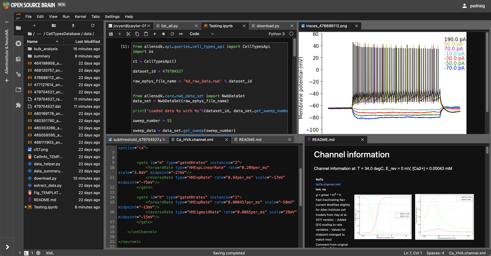

JupyterLab#
OSBv2 hosts a JupyterLab instance as one of its applications. Our JupyterLab application provides a web interface for interactive, exploratory computing, mainly in Python, with a number of neuroscience modelling and data analysis packages pre installed.
{kind=link}

Fig. 19 An instance of JupyterLab is hosted on OSBv2.#
You must be signed in to open a workspace (which may have been originally created for NWB Explorer or NetPyNE) in the JupyterLab application on OSBv2.
Features#
File management#
A significant feature of the JupyterLab application is the file browser, where workspace storage can be viewed, and files can be uploaded and existing files downloaded.
Configuration#
What Python packages are available in the JupyterLab environment? Try pip list in the Terminal to see the current set of packages.
These are set in the Dockerfile for the JupyterLab application (master version, latest development version). If you would like to add any packages here, please open an issue or a Pull Request on the Dockerfile.